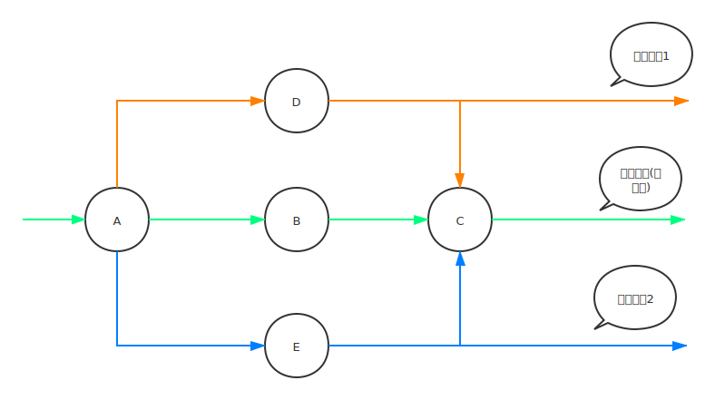
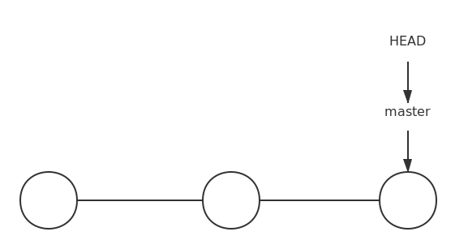
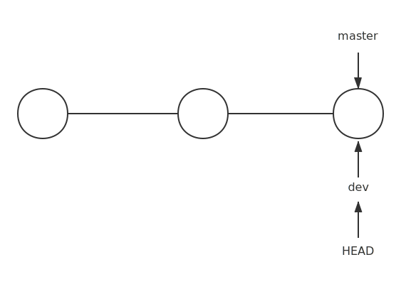
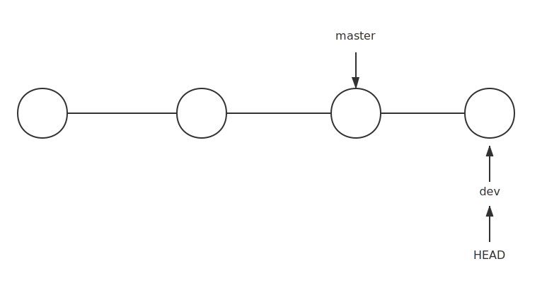
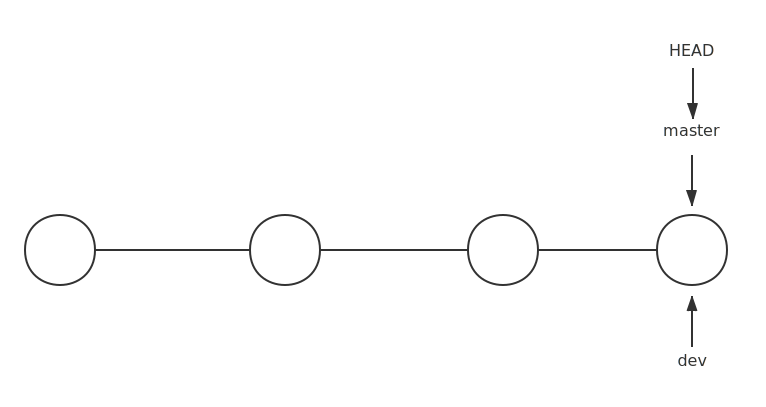

Git教程(三)：项目的分支
2020-09-23
# Git
分支的概念
首先我们从人的角度来理解分支，分支就是一个项目的不同版本，即对于同一个项目，不同的人给项目添加不同的模块，那么每个人都会让项目产生一个不同的版本，即各种分支，如下图所示：

中间绿线代表主分支的时间线，主分支通常为发行版本，橙色和蓝色分支分别是开发分支，例如张三和李四分别负责为A版本(发行版本)的项目添加一个新的模块，那么他们就会从主分支A结点分裂出两个分支，他们分别在各自的分支上开发，然后开发完毕后，在C结点合并到主分支，这时候C版本(发行版本)的项目就具备了张三和李四新开发的功能。
分支的工作原理*
在之前的描述中，可能大家会认为，每创建一个分支，Git都会像上图那样，从主分支的时间线上分裂出一个新的分支时间线，可事实并非如此：Git从始至终只会存在一条时间线，而不同的分支只是以指针的形式存在，我们借助示意图来分析：
- 最开始时间线上只有一个master分支，注意，时间线有且只有一条，并且时间线上每一个节点都代表一次提交(commit)。开始的时间上只涉及到两个指针，HEAD和master指针，其中HEAD指向当前分支，master指向提交。

- 接着我们创建一个新的dev分支，这个时候，Git会创建一个dev指针，并使其直接指向当前提交节点，而我们又发现，当前提交节点不就是master指针指向的吗？所以Git会直接将master指针的值赋给dev指针，下一步，如果我们切换到dev分支，HEAD会指向dev(因为HEAD指针指向当前分支)。

- 我们在dev分支上修改项目，并进行下一次提交，此时dev指针向前移动一步(因为分支指针指向提交)，又因为HEAD指针指向当前分支(dev)，所以HEAD指针也会跟着向前移动一步。

- 如果需要将dev分支合并到主分支，只需要将master指针前移，即将dev指针的值赋给master，再切换到主分支，HEAD指针指向master。

- 若要删除dev分支，只需要直接删除dev指针即可。
管理分支的命令
- 查看现有分支
1 | git branch |
- 创建分支
1 | git branch 分支名 //建议英文，不需要加引号 |
- 切换分支
1 | git checkout 分支名 |
- 合并分支
1 | git merge 分支名 //会把指定分支合并到你当前所在的分支 |
- 删除分支
1 | git branch -d 分支名 |
合并分支的冲突问题
还记得上一篇文中提到的合并冲突问题吗？解决冲突问题需要我们手动操作，Git会指出在合并过程中发生冲突的部分，在命令行中会指出冲突文件，然后我们打开冲突文件内部，会发现Git同样标明了冲突的文本段，如下所示：
1 | hello world！ |
<<<<<<<，=======，>>>>>>>指出了发生冲突的部分，我们修改冲突文件，例如修改如下：
1 | hello world！ |
保存文件，再手动提交：
1 | git add 1.txt |